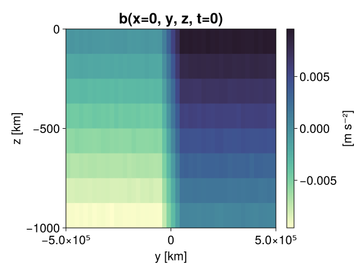
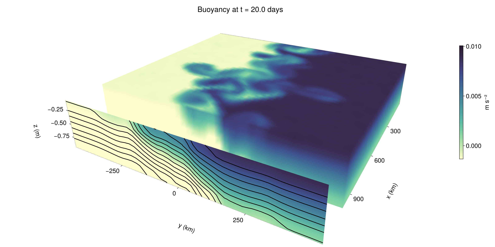

Baroclinic adjustment
In this example, we simulate the evolution and equilibration of a baroclinically unstable front.
Install dependencies
First let's make sure we have all required packages installed.
using Pkg
pkg"add Oceananigans, CairoMakie"using Oceananigans
using Oceananigans.UnitsGrid
We use a three-dimensional channel that is periodic in the x direction:
Lx = 1000kilometers # east-west extent [m]
Ly = 1000kilometers # north-south extent [m]
Lz = 1kilometers # depth [m]
grid = RectilinearGrid(size = (48, 48, 8),
x = (0, Lx),
y = (-Ly/2, Ly/2),
z = (-Lz, 0),
topology = (Periodic, Bounded, Bounded))48×48×8 RectilinearGrid{Float64, Periodic, Bounded, Bounded} on CPU with 3×3×3 halo
├── Periodic x ∈ [0.0, 1.0e6) regularly spaced with Δx=20833.3
├── Bounded y ∈ [-500000.0, 500000.0] regularly spaced with Δy=20833.3
└── Bounded z ∈ [-1000.0, 0.0] regularly spaced with Δz=125.0Model
We built a HydrostaticFreeSurfaceModel with an ImplicitFreeSurface solver. Regarding Coriolis, we use a beta-plane centered at 45° South.
model = HydrostaticFreeSurfaceModel(; grid,
coriolis = BetaPlane(latitude = -45),
buoyancy = BuoyancyTracer(),
tracers = :b,
momentum_advection = WENO(),
tracer_advection = WENO())HydrostaticFreeSurfaceModel{CPU, RectilinearGrid}(time = 0 seconds, iteration = 0)
├── grid: 48×48×8 RectilinearGrid{Float64, Periodic, Bounded, Bounded} on CPU with 3×3×3 halo
├── timestepper: QuasiAdamsBashforth2TimeStepper
├── tracers: b
├── closure: Nothing
├── buoyancy: BuoyancyTracer with ĝ = NegativeZDirection()
├── free surface: ImplicitFreeSurface with gravitational acceleration 9.80665 m s⁻²
│ └── solver: FFTImplicitFreeSurfaceSolver
├── advection scheme:
│ ├── momentum: WENO{3, Float64, Float32}(order=5)
│ └── b: WENO{3, Float64, Float32}(order=5)
├── vertical_coordinate: ZCoordinate
└── coriolis: BetaPlane{Float64}We start our simulation from rest with a baroclinically unstable buoyancy distribution. We use ramp(y, Δy), defined below, to specify a front with width Δy and horizontal buoyancy gradient M². We impose the front on top of a vertical buoyancy gradient N² and a bit of noise.
"""
ramp(y, Δy)
Linear ramp from 0 to 1 between -Δy/2 and +Δy/2.
For example:
```
y < -Δy/2 => ramp = 0
-Δy/2 < y < -Δy/2 => ramp = y / Δy
y > Δy/2 => ramp = 1
```
"""
ramp(y, Δy) = min(max(0, y/Δy + 1/2), 1)
N² = 1e-5 # [s⁻²] buoyancy frequency / stratification
M² = 1e-7 # [s⁻²] horizontal buoyancy gradient
Δy = 100kilometers # width of the region of the front
Δb = Δy * M² # buoyancy jump associated with the front
ϵb = 1e-2 * Δb # noise amplitude
bᵢ(x, y, z) = N² * z + Δb * ramp(y, Δy) + ϵb * randn()
set!(model, b=bᵢ)Let's visualize the initial buoyancy distribution.
using CairoMakie
set_theme!(Theme(fontsize = 20))
# Build coordinates with units of kilometers
x, y, z = 1e-3 .* nodes(grid, (Center(), Center(), Center()))
b = model.tracers.b
fig, ax, hm = heatmap(view(b, 1, :, :),
colormap = :deep,
axis = (xlabel = "y [km]",
ylabel = "z [km]",
title = "b(x=0, y, z, t=0)",
titlesize = 24))
Colorbar(fig[1, 2], hm, label = "[m s⁻²]")
fig
Simulation
Now let's build a Simulation.
simulation = Simulation(model, Δt=20minutes, stop_time=20days)Simulation of HydrostaticFreeSurfaceModel{CPU, RectilinearGrid}(time = 0 seconds, iteration = 0)
├── Next time step: 20 minutes
├── Elapsed wall time: 0 seconds
├── Wall time per iteration: NaN days
├── Stop time: 20 days
├── Stop iteration: Inf
├── Wall time limit: Inf
├── Minimum relative step: 0.0
├── Callbacks: OrderedDict with 4 entries:
│ ├── stop_time_exceeded => 4
│ ├── stop_iteration_exceeded => -
│ ├── wall_time_limit_exceeded => e
│ └── nan_checker => }
├── Output writers: OrderedDict with no entries
└── Diagnostics: OrderedDict with no entriesWe add a TimeStepWizard callback to adapt the simulation's time-step,
conjure_time_step_wizard!(simulation, IterationInterval(20), cfl=0.2, max_Δt=20minutes)Also, we add a callback to print a message about how the simulation is going,
using Printf
wall_clock = Ref(time_ns())
function print_progress(sim)
u, v, w = model.velocities
progress = 100 * (time(sim) / sim.stop_time)
elapsed = (time_ns() - wall_clock[]) / 1e9
@printf("[%05.2f%%] i: %d, t: %s, wall time: %s, max(u): (%6.3e, %6.3e, %6.3e) m/s, next Δt: %s\n",
progress, iteration(sim), prettytime(sim), prettytime(elapsed),
maximum(abs, u), maximum(abs, v), maximum(abs, w), prettytime(sim.Δt))
wall_clock[] = time_ns()
return nothing
end
add_callback!(simulation, print_progress, IterationInterval(100))Diagnostics/Output
Here, we save the buoyancy, $b$, at the edges of our domain as well as the zonal ($x$) average of buoyancy.
u, v, w = model.velocities
ζ = ∂x(v) - ∂y(u)
B = Average(b, dims=1)
U = Average(u, dims=1)
V = Average(v, dims=1)
filename = "baroclinic_adjustment"
save_fields_interval = 0.5day
slicers = (east = (grid.Nx, :, :),
north = (:, grid.Ny, :),
bottom = (:, :, 1),
top = (:, :, grid.Nz))
for side in keys(slicers)
indices = slicers[side]
simulation.output_writers[side] = JLD2Writer(model, (; b, ζ);
filename = filename * "_$(side)_slice",
schedule = TimeInterval(save_fields_interval),
overwrite_existing = true,
indices)
end
simulation.output_writers[:zonal] = JLD2Writer(model, (; b=B, u=U, v=V);
filename = filename * "_zonal_average",
schedule = TimeInterval(save_fields_interval),
overwrite_existing = true)JLD2Writer scheduled on TimeInterval(12 hours):
├── filepath: baroclinic_adjustment_zonal_average.jld2
├── 3 outputs: (b, u, v)
├── array_type: Array{Float32}
├── including: [:grid, :coriolis, :buoyancy, :closure]
├── file_splitting: NoFileSplitting
└── file size: 32.5 KiBNow we're ready to run.
@info "Running the simulation..."
run!(simulation)
@info "Simulation completed in " * prettytime(simulation.run_wall_time)[ Info: Running the simulation...
[ Info: Initializing simulation...
[00.00%] i: 0, t: 0 seconds, wall time: 39.155 seconds, max(u): (0.000e+00, 0.000e+00, 0.000e+00) m/s, next Δt: 20 minutes
[ Info: ... simulation initialization complete (31.230 seconds)
[ Info: Executing initial time step...
[ Info: ... initial time step complete (19.309 seconds).
[06.94%] i: 100, t: 1.389 days, wall time: 43.498 seconds, max(u): (1.289e-01, 1.122e-01, 1.560e-03) m/s, next Δt: 20 minutes
[13.89%] i: 200, t: 2.778 days, wall time: 682.703 ms, max(u): (2.056e-01, 1.662e-01, 1.701e-03) m/s, next Δt: 20 minutes
[20.83%] i: 300, t: 4.167 days, wall time: 513.092 ms, max(u): (2.882e-01, 2.237e-01, 1.752e-03) m/s, next Δt: 20 minutes
[27.78%] i: 400, t: 5.556 days, wall time: 588.851 ms, max(u): (3.874e-01, 3.086e-01, 2.013e-03) m/s, next Δt: 20 minutes
[34.72%] i: 500, t: 6.944 days, wall time: 524.552 ms, max(u): (4.788e-01, 3.854e-01, 1.935e-03) m/s, next Δt: 20 minutes
[41.67%] i: 600, t: 8.333 days, wall time: 570.406 ms, max(u): (5.946e-01, 5.616e-01, 2.179e-03) m/s, next Δt: 20 minutes
[48.61%] i: 700, t: 9.722 days, wall time: 546.081 ms, max(u): (7.640e-01, 9.320e-01, 2.634e-03) m/s, next Δt: 20 minutes
[55.56%] i: 800, t: 11.111 days, wall time: 624.668 ms, max(u): (9.275e-01, 1.351e+00, 3.745e-03) m/s, next Δt: 20 minutes
[62.50%] i: 900, t: 12.500 days, wall time: 588.210 ms, max(u): (1.156e+00, 1.326e+00, 4.480e-03) m/s, next Δt: 20 minutes
[69.44%] i: 1000, t: 13.889 days, wall time: 591.856 ms, max(u): (1.362e+00, 1.468e+00, 4.524e-03) m/s, next Δt: 20 minutes
[76.39%] i: 1100, t: 15.278 days, wall time: 646.276 ms, max(u): (1.413e+00, 1.369e+00, 4.057e-03) m/s, next Δt: 20 minutes
[83.33%] i: 1200, t: 16.667 days, wall time: 630.820 ms, max(u): (1.569e+00, 1.312e+00, 3.394e-03) m/s, next Δt: 20 minutes
[90.28%] i: 1300, t: 18.056 days, wall time: 598.866 ms, max(u): (1.649e+00, 1.425e+00, 4.023e-03) m/s, next Δt: 20 minutes
[97.22%] i: 1400, t: 19.444 days, wall time: 573.202 ms, max(u): (1.442e+00, 1.425e+00, 5.222e-03) m/s, next Δt: 20 minutes
[ Info: Simulation is stopping after running for 1.043 minutes.
[ Info: Simulation time 20 days equals or exceeds stop time 20 days.
[ Info: Simulation completed in 1.044 minutes
Visualization
All that's left is to make a pretty movie. Actually, we make two visualizations here. First, we illustrate how to make a 3D visualization with Makie's Axis3 and Makie.surface. Then we make a movie in 2D. We use CairoMakie in this example, but note that using GLMakie is more convenient on a system with OpenGL, as figures will be displayed on the screen.
using CairoMakieThree-dimensional visualization
We load the saved buoyancy output on the top, north, and east surface as FieldTimeSerieses.
filename = "baroclinic_adjustment"
sides = keys(slicers)
slice_filenames = NamedTuple(side => filename * "_$(side)_slice.jld2" for side in sides)
b_timeserieses = (east = FieldTimeSeries(slice_filenames.east, "b"),
north = FieldTimeSeries(slice_filenames.north, "b"),
top = FieldTimeSeries(slice_filenames.top, "b"))
B_timeseries = FieldTimeSeries(filename * "_zonal_average.jld2", "b")
times = B_timeseries.times
grid = B_timeseries.grid48×48×8 RectilinearGrid{Float64, Periodic, Bounded, Bounded} on CPU with 3×3×3 halo
├── Periodic x ∈ [0.0, 1.0e6) regularly spaced with Δx=20833.3
├── Bounded y ∈ [-500000.0, 500000.0] regularly spaced with Δy=20833.3
└── Bounded z ∈ [-1000.0, 0.0] regularly spaced with Δz=125.0We build the coordinates. We rescale horizontal coordinates to kilometers.
xb, yb, zb = nodes(b_timeserieses.east)
xb = xb ./ 1e3 # convert m -> km
yb = yb ./ 1e3 # convert m -> km
Nx, Ny, Nz = size(grid)
x_xz = repeat(x, 1, Nz)
y_xz_north = y[end] * ones(Nx, Nz)
z_xz = repeat(reshape(z, 1, Nz), Nx, 1)
x_yz_east = x[end] * ones(Ny, Nz)
y_yz = repeat(y, 1, Nz)
z_yz = repeat(reshape(z, 1, Nz), grid.Ny, 1)
x_xy = x
y_xy = y
z_xy_top = z[end] * ones(grid.Nx, grid.Ny)Then we create a 3D axis. We use zonal_slice_displacement to control where the plot of the instantaneous zonal average flow is located.
fig = Figure(size = (1600, 800))
zonal_slice_displacement = 1.2
ax = Axis3(fig[2, 1],
aspect=(1, 1, 1/5),
xlabel = "x (km)",
ylabel = "y (km)",
zlabel = "z (m)",
xlabeloffset = 100,
ylabeloffset = 100,
zlabeloffset = 100,
limits = ((x[1], zonal_slice_displacement * x[end]), (y[1], y[end]), (z[1], z[end])),
elevation = 0.45,
azimuth = 6.8,
xspinesvisible = false,
zgridvisible = false,
protrusions = 40,
perspectiveness = 0.7)Axis3()We use data from the final savepoint for the 3D plot. Note that this plot can easily be animated by using Makie's Observable. To dive into Observables, check out Makie.jl's Documentation.
n = length(times)41Now let's make a 3D plot of the buoyancy and in front of it we'll use the zonally-averaged output to plot the instantaneous zonal-average of the buoyancy.
b_slices = (east = interior(b_timeserieses.east[n], 1, :, :),
north = interior(b_timeserieses.north[n], :, 1, :),
top = interior(b_timeserieses.top[n], :, :, 1))
# Zonally-averaged buoyancy
B = interior(B_timeseries[n], 1, :, :)
clims = 1.1 .* extrema(b_timeserieses.top[n][:])
kwargs = (colorrange=clims, colormap=:deep, shading=NoShading)
surface!(ax, x_yz_east, y_yz, z_yz; color = b_slices.east, kwargs...)
surface!(ax, x_xz, y_xz_north, z_xz; color = b_slices.north, kwargs...)
surface!(ax, x_xy, y_xy, z_xy_top; color = b_slices.top, kwargs...)
sf = surface!(ax, zonal_slice_displacement .* x_yz_east, y_yz, z_yz; color = B, kwargs...)
contour!(ax, y, z, B; transformation = (:yz, zonal_slice_displacement * x[end]),
levels = 15, linewidth = 2, color = :black)
Colorbar(fig[2, 2], sf, label = "m s⁻²", height = Relative(0.4), tellheight=false)
title = "Buoyancy at t = " * string(round(times[n] / day, digits=1)) * " days"
fig[1, 1:2] = Label(fig, title; fontsize = 24, tellwidth = false, padding = (0, 0, -120, 0))
rowgap!(fig.layout, 1, Relative(-0.2))
colgap!(fig.layout, 1, Relative(-0.1))
save("baroclinic_adjustment_3d.png", fig)
Two-dimensional movie
We make a 2D movie that shows buoyancy $b$ and vertical vorticity $ζ$ at the surface, as well as the zonally-averaged zonal and meridional velocities $U$ and $V$ in the $(y, z)$ plane. First we load the FieldTimeSeries and extract the additional coordinates we'll need for plotting
ζ_timeseries = FieldTimeSeries(slice_filenames.top, "ζ")
U_timeseries = FieldTimeSeries(filename * "_zonal_average.jld2", "u")
B_timeseries = FieldTimeSeries(filename * "_zonal_average.jld2", "b")
V_timeseries = FieldTimeSeries(filename * "_zonal_average.jld2", "v")
xζ, yζ, zζ = nodes(ζ_timeseries)
yv = ynodes(V_timeseries)
xζ = xζ ./ 1e3 # convert m -> km
yζ = yζ ./ 1e3 # convert m -> km
yv = yv ./ 1e3 # convert m -> km-500.0:20.833333333333332:500.0Next, we set up a plot with 4 panels. The top panels are large and square, while the bottom panels get a reduced aspect ratio through rowsize!.
fig = Figure(size=(1800, 1000))
axb = Axis(fig[1, 2], xlabel="x (km)", ylabel="y (km)", aspect=1)
axζ = Axis(fig[1, 3], xlabel="x (km)", ylabel="y (km)", aspect=1, yaxisposition=:right)
axu = Axis(fig[2, 2], xlabel="y (km)", ylabel="z (m)")
axv = Axis(fig[2, 3], xlabel="y (km)", ylabel="z (m)", yaxisposition=:right)
rowsize!(fig.layout, 2, Relative(0.3))To prepare a plot for animation, we index the timeseries with an Observable,
n = Observable(1)
b_top = @lift interior(b_timeserieses.top[$n], :, :, 1)
ζ_top = @lift interior(ζ_timeseries[$n], :, :, 1)
U = @lift interior(U_timeseries[$n], 1, :, :)
V = @lift interior(V_timeseries[$n], 1, :, :)
B = @lift interior(B_timeseries[$n], 1, :, :)Observable([-0.009350637905299664 -0.008108464069664478 -0.0068770162761211395 -0.005619938485324383 -0.004391184542328119 -0.0031237902585417032 -0.0018746174173429608 -0.0006339160609059036; -0.009366242215037346 -0.008135385811328888 -0.006868791300803423 -0.005596267059445381 -0.0043640099465847015 -0.003135447856038809 -0.0018825907027348876 -0.0006143133505247533; -0.009397242218255997 -0.008117925375699997 -0.006861378438770771 -0.005595849361270666 -0.00438773725181818 -0.0031404001638293266 -0.001875049201771617 -0.0006209527491591871; -0.009365299716591835 -0.008121093735098839 -0.0068614911288022995 -0.0056365798227488995 -0.004353877156972885 -0.003129347926005721 -0.001867394894361496 -0.0005962011637166142; -0.0093825189396739 -0.00812452007085085 -0.006878246553242207 -0.005622475873678923 -0.004379985388368368 -0.0031222570687532425 -0.0018796364311128855 -0.0006040642620064318; -0.009373062290251255 -0.008125980384647846 -0.006891942583024502 -0.005633109249174595 -0.0043768854811787605 -0.003142744302749634 -0.0018679650966078043 -0.0006210886058397591; -0.009402348659932613 -0.008137109689414501 -0.006876121275126934 -0.005624014418572187 -0.004353724420070648 -0.003095786552876234 -0.001866132952272892 -0.000645571737550199; -0.009351454675197601 -0.008113948628306389 -0.006856713443994522 -0.005653095431625843 -0.004358867183327675 -0.00310470606200397 -0.00187807553447783 -0.000612824980635196; -0.009374954737722874 -0.008115511387586594 -0.006881226785480976 -0.0055921487510204315 -0.0043762060813605785 -0.0031009719241410494 -0.0018763315165415406 -0.000626546738203615; -0.009378768503665924 -0.008121287450194359 -0.006891667377203703 -0.005629224237054586 -0.004370034672319889 -0.0031379852443933487 -0.001895714900456369 -0.0006411350914277136; -0.009394979104399681 -0.00814038049429655 -0.006856737658381462 -0.0056290654465556145 -0.00437489990144968 -0.0031189098954200745 -0.0018635827582329512 -0.0006518752197735012; -0.009397693909704685 -0.008110418915748596 -0.006904673762619495 -0.005607569590210915 -0.0043601649813354015 -0.003131718607619405 -0.0018881504656746984 -0.0006372368079610169; -0.009382694959640503 -0.008102859370410442 -0.0068456679582595825 -0.005644707940518856 -0.00439275661483407 -0.003148792777210474 -0.0018462409498170018 -0.0006238420610316098; -0.009359913878142834 -0.008126477710902691 -0.006857958622276783 -0.005605826620012522 -0.004384803120046854 -0.0031453098636120558 -0.0018766341963782907 -0.0006188410916365683; -0.00936887226998806 -0.008152012713253498 -0.006873795762658119 -0.00561605766415596 -0.004388892557471991 -0.0031108653638511896 -0.001882213051430881 -0.0006436358671635389; -0.009368225000798702 -0.00814846158027649 -0.0068503436632454395 -0.005615059286355972 -0.004380898550152779 -0.0031413850374519825 -0.0018900060094892979 -0.0006310507305897772; -0.009382226504385471 -0.008150401525199413 -0.006879688706248999 -0.005638536531478167 -0.00436848821118474 -0.003126112511381507 -0.0018655944149941206 -0.0006317609222605824; -0.009385828860104084 -0.008123132400214672 -0.006904155947268009 -0.005624913144856691 -0.004373785108327866 -0.003094968618825078 -0.0018564971396699548 -0.0006258575594983995; -0.009363380260765553 -0.008154443465173244 -0.006901540327817202 -0.0056529901921749115 -0.004350584466010332 -0.003138461383059621 -0.0018667354015633464 -0.0006654536700807512; -0.009359980002045631 -0.008135021664202213 -0.006892572157084942 -0.005614364054054022 -0.004384208470582962 -0.003141813213005662 -0.0018712870078161359 -0.0006475116242654622; -0.00939946249127388 -0.008127805776894093 -0.006864238064736128 -0.005620456766337156 -0.004359446465969086 -0.0030968820210546255 -0.001879738294519484 -0.0006333389901556075; -0.009371323511004448 -0.00811466109007597 -0.006899372208863497 -0.005625900812447071 -0.004377421457320452 -0.0031250054016709328 -0.0018886284669861197 -0.0006169653497636318; -0.007510783150792122 -0.006244103889912367 -0.004967312794178724 -0.003764139022678137 -0.002488309284672141 -0.00124289037194103 6.313762696663616e-6 0.0012522388715296984; -0.0054090735502541065 -0.004175081849098206 -0.0029405937530100346 -0.0016605552518740296 -0.00041449168929830194 0.0008334456360898912 0.002087634289637208 0.0033226299565285444; -0.003367580473423004 -0.0020918105728924274 -0.0008292978163808584 0.0004361016326583922 0.0016522450605407357 0.002928336849436164 0.004154636058956385 0.005437847692519426; -0.0012490552617236972 2.377749297011178e-5 0.0012567279627546668 0.0025005473289638758 0.0037500520702451468 0.004995801020413637 0.006265193689614534 0.00748520577326417; 0.0006096790311858058 0.0018778960220515728 0.003115138504654169 0.004369078669697046 0.005627871491014957 0.006867529824376106 0.008115814067423344 0.009362002834677696; 0.000611895346082747 0.0018817484378814697 0.0031259802635759115 0.004364883992820978 0.005626332946121693 0.006886565592139959 0.008129695430397987 0.009357166476547718; 0.000607191352173686 0.0018615786684677005 0.0031503101345151663 0.004382588900625706 0.00562689546495676 0.006870151497423649 0.008104529231786728 0.009391272440552711; 0.0006084020715206861 0.0018796161748468876 0.003134631784632802 0.004379650112241507 0.005610892083495855 0.006863289978355169 0.008136415854096413 0.009360935539007187; 0.0006089287344366312 0.0018573746783658862 0.0031309686601161957 0.00439144903793931 0.005611263681203127 0.006865274161100388 0.008125425316393375 0.009361542761325836; 0.0006453359383158386 0.0018535159761086106 0.0031356026884168386 0.004397053271532059 0.005626340862363577 0.0068557350896298885 0.008144546300172806 0.009386170655488968; 0.0006435585673898458 0.0018690695287659764 0.003096805652603507 0.0043779341503977776 0.005623108707368374 0.006867383606731892 0.008131462149322033 0.009386343881487846; 0.0006261817179620266 0.0018741840030997992 0.0031169417779892683 0.004379764664918184 0.005592606496065855 0.006882738787680864 0.00810176320374012 0.009370510466396809; 0.0006297382642515004 0.0018907580524682999 0.003129801247268915 0.0043778265826404095 0.00561908446252346 0.00687040388584137 0.00812214333564043 0.009351433254778385; 0.0006029953947290778 0.001885614707134664 0.0031006920617073774 0.004382297396659851 0.0056234607473015785 0.006899273954331875 0.008149482309818268 0.009372234344482422; 0.0006107317749410868 0.0018879283452406526 0.0031558640766888857 0.0043883416801691055 0.005610831547528505 0.006873153615742922 0.008142445236444473 0.009378857910633087; 0.0006284255650825799 0.0019013257697224617 0.0031206225976347923 0.00436257291585207 0.005630946718156338 0.006843090523034334 0.008136036805808544 0.009377935901284218; 0.000607719412073493 0.001885809120722115 0.003148348769173026 0.004362595267593861 0.0056181615218520164 0.0068906331434845924 0.008120005019009113 0.009375045076012611; 0.0006374376825988293 0.0018674266757443547 0.0031299488618969917 0.004369663540273905 0.005608914420008659 0.0068812589161098 0.00812355987727642 0.009393591433763504; 0.0006309010786935687 0.0018705041147768497 0.0031201308593153954 0.004381192848086357 0.0056294035166502 0.006882702000439167 0.008117632009088993 0.009381908923387527; 0.0006262911483645439 0.0018580559408292174 0.003101977054029703 0.0043794685043394566 0.005623665172606707 0.006882885470986366 0.008117005228996277 0.009378167800605297; 0.0006416622782126069 0.0018950746161863208 0.003106213640421629 0.0043786014430224895 0.005614801310002804 0.006863902788609266 0.008145091123878956 0.009367965161800385; 0.0006237022462300956 0.0018853340297937393 0.0031303504947572947 0.00437499675899744 0.005647057667374611 0.006850015837699175 0.008145988918840885 0.00937606766819954; 0.0006319038802757859 0.0018970138626173139 0.003132469719275832 0.004391755908727646 0.005645717494189739 0.0068610175512731075 0.008109676651656628 0.009352823719382286; 0.0006206162506714463 0.001866033999249339 0.003121615620329976 0.0043936665169894695 0.005611406173557043 0.006834056694060564 0.008136297576129436 0.00937757920473814; 0.000640298065263778 0.0018673633458092809 0.0031361370347440243 0.004393353126943111 0.0055932956747710705 0.006865893956273794 0.00812472216784954 0.009422010742127895; 0.0006371217896230519 0.0018698701169341803 0.003092761617153883 0.004362022969871759 0.005607187747955322 0.006837461143732071 0.008115319535136223 0.009386950172483921])
and then build our plot:
hm = heatmap!(axb, xb, yb, b_top, colorrange=(0, Δb), colormap=:thermal)
Colorbar(fig[1, 1], hm, flipaxis=false, label="Surface b(x, y) (m s⁻²)")
hm = heatmap!(axζ, xζ, yζ, ζ_top, colorrange=(-5e-5, 5e-5), colormap=:balance)
Colorbar(fig[1, 4], hm, label="Surface ζ(x, y) (s⁻¹)")
hm = heatmap!(axu, yb, zb, U; colorrange=(-5e-1, 5e-1), colormap=:balance)
Colorbar(fig[2, 1], hm, flipaxis=false, label="Zonally-averaged U(y, z) (m s⁻¹)")
contour!(axu, yb, zb, B; levels=15, color=:black)
hm = heatmap!(axv, yv, zb, V; colorrange=(-1e-1, 1e-1), colormap=:balance)
Colorbar(fig[2, 4], hm, label="Zonally-averaged V(y, z) (m s⁻¹)")
contour!(axv, yb, zb, B; levels=15, color=:black)Finally, we're ready to record the movie.
frames = 1:length(times)
record(fig, filename * ".mp4", frames, framerate=8) do i
n[] = i
endThis page was generated using Literate.jl.